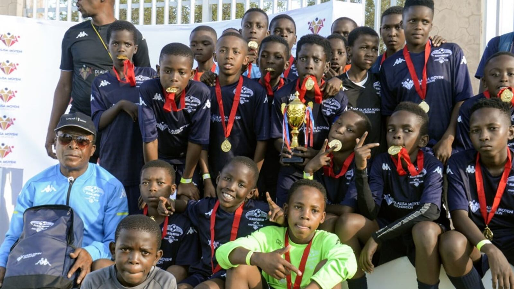

Skill development
Build football fundamentals, technique and confidence through practice.
 Dlalisa Moyeni Academy
Dlalisa Moyeni Academy
FOOTBALL · DEVELOPMENT · COMMUNITY
Dlalisa Moyeni Academy helps young people grow through football, education, discipline and teamwork.

WELCOME TO THE ACADEMY
We create a positive environment where young people can develop their football ability, confidence and life skills. Every session is an opportunity to learn, improve and work together.
Build football fundamentals, technique and confidence through practice.
Learn communication, respect and how to support teammates.
Develop discipline, commitment and a positive attitude on and off the pitch.
OUR COMMUNITY
Select the photograph to view it larger.
Ask us about training, volunteering or supporting the academy.
Make an enquiry